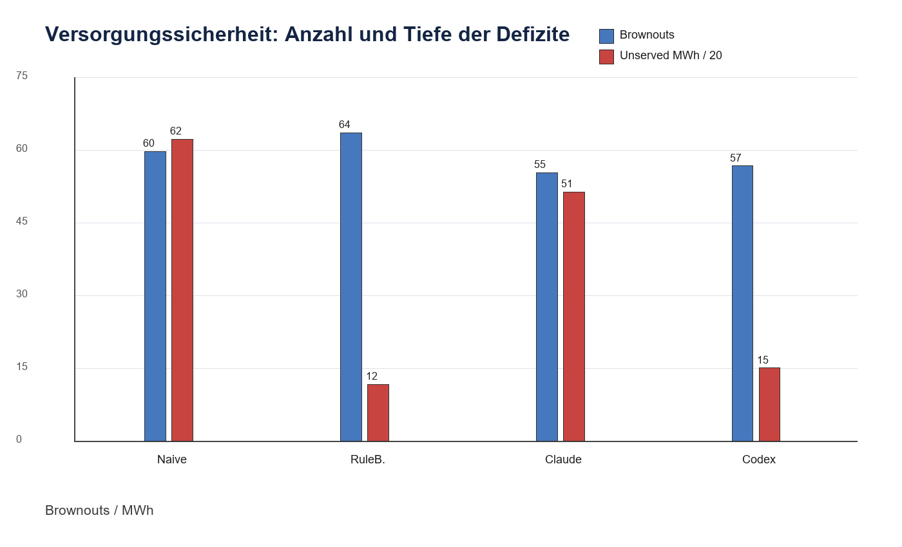
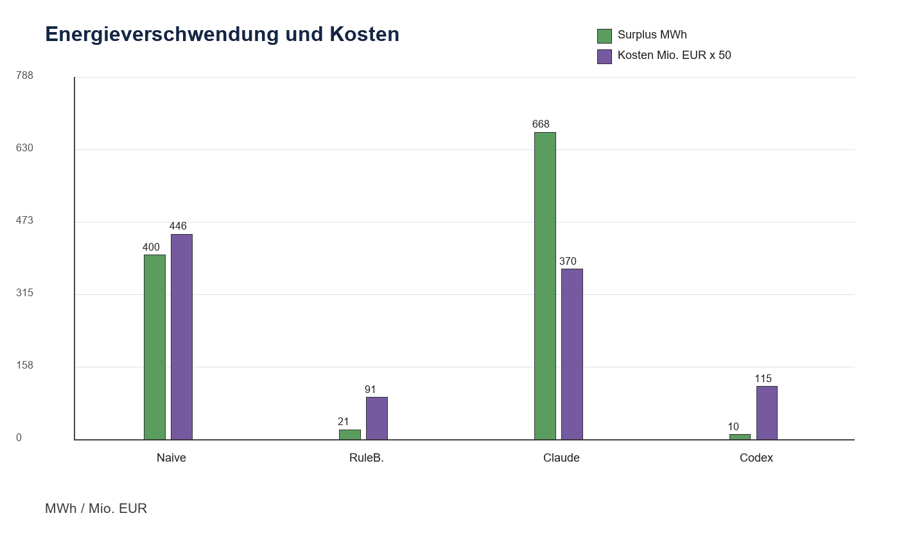
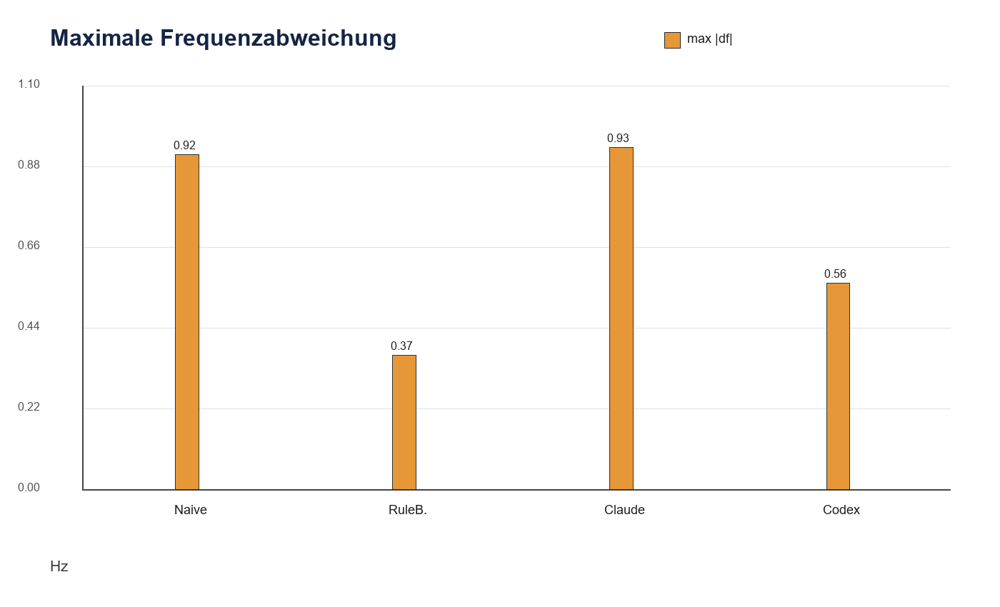
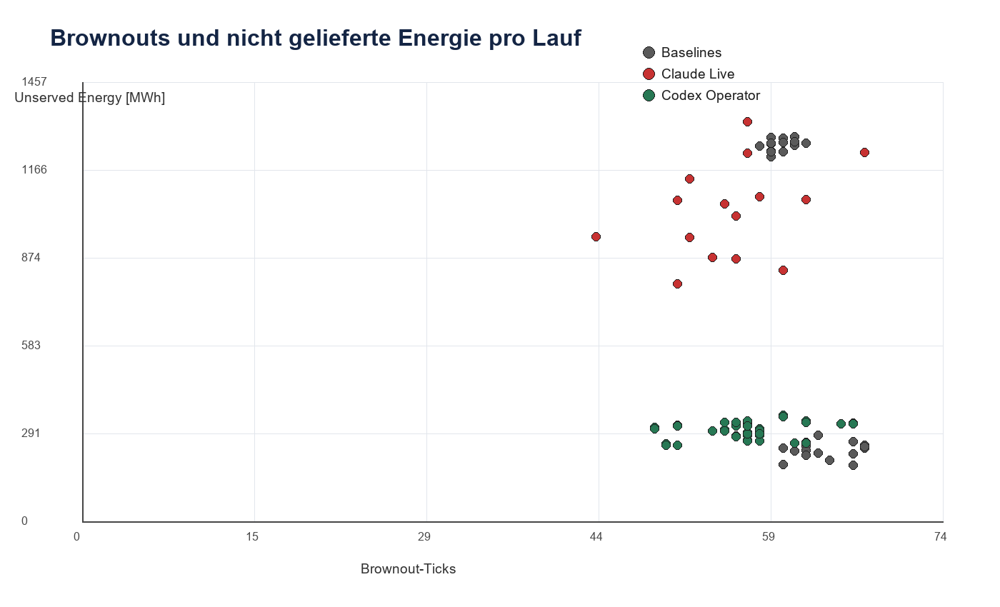
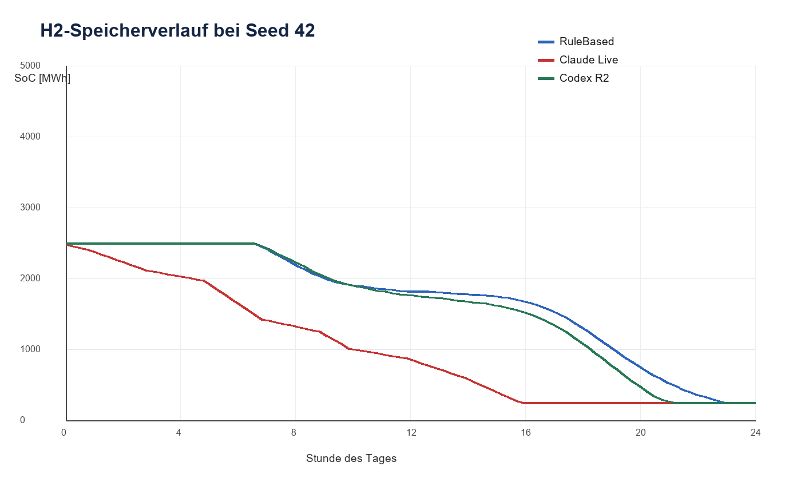

RuleBased ist der Sicherheitsmaßstab
RuleBased hat zwar mehr Brownout-Ticks als Claude und Codex, aber nur 233,3 MWh unversorgte Energie. Das ist die wichtigste physikalische Kenngröße für Versorgungssicherheit.
Aktueller Stand / 90 Messläufe / 15 Seeds
Kann eine KI-Steuerung ein 100 % erneuerbares Smart Grid sicherer betreiben als eine regelbasierte Heuristik?
Die Simulation zeigt ein differenziertes Ergebnis: Claude-Subagents und Codex bedienen das Netz über die CLI und senken teilweise die Brownout-Anzahl. Für echte Versorgungssicherheit zählen aber unversorgte Energie, Frequenz und Kosten. Dort bleibt RuleBased im aktuellen Datensatz am stärksten.
Kernaussage
RuleBased hat zwar mehr Brownout-Ticks als Claude und Codex, aber nur 233,3 MWh unversorgte Energie. Das ist die wichtigste physikalische Kenngröße für Versorgungssicherheit.
Codex kommt auf 56,9 Brownout-Ticks, 301,4 MWh unversorgte Energie und nur 10,2 MWh Überschuss. Das ist deutlich besser als Claude, aber bei Defizittiefe noch schwächer als RuleBased.
Claude reduziert die Brownout-Anzahl auf 55,5 Ticks, verursacht aber 1028,9 MWh unversorgte Energie und etwa 7,40 Mio. € Tageskosten. Der Speicherhaushalt wird nicht stabil genug geplant.
Aktuelle Diagramme
Alle Abbildungen wurden aus den geordneten Messreihen in smartgrid_messreihen/00_ueberblick und 05_seminararbeit/charts_aktuell neu erzeugt.





Strategievergleich
Die Baselines laufen automatisch. Claude-Subagents und Codex Operator bedienen die Simulation über die CLI: Zustand lesen, Sollwerte setzen, weiterlaufen lassen.
n = 15
Statische Setpoints erzeugen ähnlich viele Brownouts wie die besseren Strategien, aber die Defizite sind sehr tief. Naive dient als untere Vergleichsgrenze.
Daten & Downloads
Die Website verlinkt die aktuelle Datenbasis mit 90 indexierten Läufen. Der alte 45-Läufe-Stand wurde ersetzt.
Enthält Master-Index, Aggregatdateien, Baselines, Claude-Läufe, Codex-Läufe, Wetteranalyse, Seminararbeits-DOCX, Quellenblatt und aktuelle Diagramme.
Prüferpaket herunterladen| Strategie | n | Brownouts | Unserved MWh | Surplus MWh | max |df| Hz | Kosten Mio. € | Einordnung |
|---|---|---|---|---|---|---|---|
| Naive | 15 | 59,87 | 1248,30 | 400,41 | 0,915 | 8,93 | untere Vergleichsgrenze |
| RuleBased | 15 | 63,73 | 233,25 | 20,88 | 0,366 | 1,82 | beste Versorgungssicherheit |
| Claude CLI-Subagents | 15 | 55,47 | 1028,90 | 667,85 | 0,935 | 7,40 | wenige, aber tiefe Defizite |
| Codex Operator | 45 | 56,89 | 301,39 | 10,21 | 0,564 | 2,30 | nahe an RuleBased, wenig Surplus |
Interpretation: RuleBased bleibt bei unversorgter Energie, Frequenz und Kosten vorne. Codex ist die beste KI-nahe Bedienweise. Claude zeigt, warum Brownout-Anzahl allein als Zielgröße irreführt.
Kompletter, aktueller Messreihenstand ohne alten Originalimport. Gut für Prüfer, Abgabeordner und Nachvollziehbarkeit.
ZIP herunterladenDOCX mit Modellbeschreibung, Messreihen-Auswertung, Diagrammen, Tabellenanhang und Detailquellenblatt.
DOCX herunterladenExcel-Datei mit eigenen Primärquellen und externen Hintergrundquellen, getrennt nach Verwendung.
XLSX herunterladenEine Zeile pro Lauf: Quelle, Reihe, Controller, Seed, Metriken, Pfade und Reproducibility-Hash.
CSV herunterladenMittelwerte und Standardabweichungen je Quelle, Reihe und Controller.
CSV herunterladenAlle 45 Codex-Operator-Läufe aus drei Durchgängen in einer kompakten Tabelle.
CSV herunterladenAlle fünf aktuellen PNG-Diagramme aus der Seminararbeitsauswertung.
ZIP herunterladenWetterauswertung und Einordnung der synthetischen Seed-Tage.
MD herunterladenSeminararbeit_Teil_Modell_und_Messreihen_aktualisiert.docx erklärt Modell, Messreihen und Ergebnis auf Abitur-Physik-Niveau.master_index.csv enthält alle einzelnen Läufe; aggregate_by_series_controller.csv enthält die Mittelwerte.codex_all_rounds.csv zeigt die drei Codex-Durchgänge und macht sichtbar, dass die Ergebnisse stabil nah beieinander liegen.Detailquellenblatt.xlsx trennt eigene Simulationsdaten von externen Hintergrundquellen.Simulationsmodell
Das Modell ist bewusst vereinfacht: ein Sammelknoten, 15-Minuten-Schritte, synthetisches Wetter, erneuerbare Erzeugung, Speicher und flexible Verbraucher.
Rund 150 000 Einwohner-Äquivalent, 96 Ticks pro Tag, deterministische Seeds, CSV/JSON-Ausgabe und pausierbare CLI-Steuerung.
Methodik
Alle Strategien laufen über dieselben 15 Seeds. Dadurch sind Wetter, Lastverlauf und Ausgangsbedingungen vergleichbar.
Die Komponenten liefern pro Tick eine Wirkleistung. Danach berechnet die Engine Bilanz, Frequenz, Überschuss, Defizit und Kosten.
Claude-Subagents und Codex nutzen beide die CLI-Bedienung. Sie sind keine versteckten Kraftwerksmodelle.
Jeder Lauf hat Metrics, CSV-Pfad und Hash. Die Website verweist auf dieselben Dateien wie die Seminararbeitsauswertung.